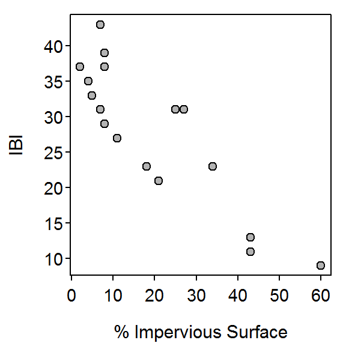
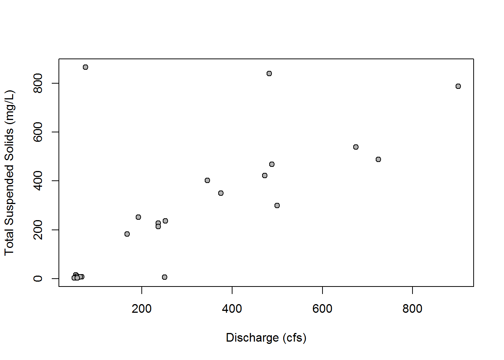
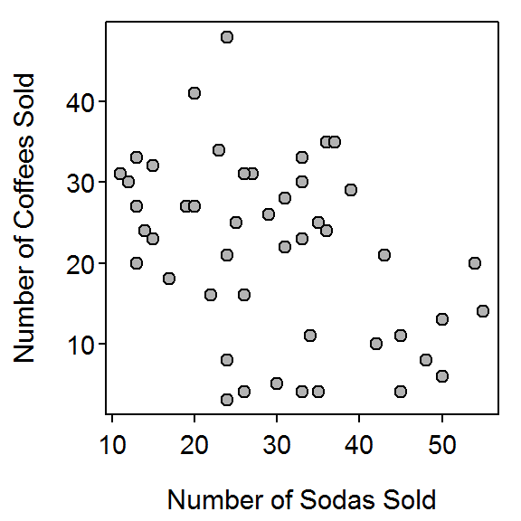
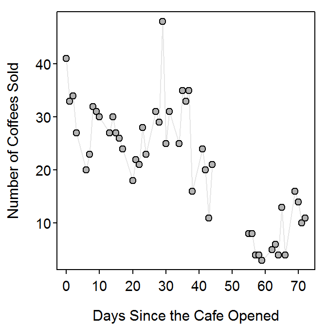

Scatterplots
- Location of the Christmas bird count.
- Both are quantitative, continuous.
- 55 degrees north.
- Approximately 11%.
- 39 degrees north, 71%.
- 6 surveys.
- 4 surveys (not including 40 and 45).
- Negative.
Associations I
- Gas mileage as I would expect gas mileage to depend on the weight of the car. (b) Negative as I would expect heavier cars to require more gas (and, thus, gas mileage would decrease).
- Proportion that became ill as I would expect that to depend on the proportion that were vaccinated. (b) Negative as I would expect the number that became ill to decrease with an increasing proportion vaccinated.
- Salary as I would expect it to depend on years of education. (b) Positive as I would expect expected salary to increase the more education an individual achieved.
- Can’t tell without more context. (b) Neutral as I would not expect exam score to depend on one’s mother’s age.
- Proportion of households that have an air conditioner. (b) Positive.
Animal Fat and Breast Cancer
The relationship between age-adjusted death rate and animal fat intake is positive, linear, absent of outliers, and very strong (r=0.949; Figure on exercise). It was valid to assess strength with the correlation coefficient because of the linear form and lack of outliers.
Urban Runoff
- IBI.
- Percent impervious surface.
- The relationship between IBI and the percent of impervious surface is negative, nonlinear, and moderately strong with no obvious outliers (Figure 1). I did not report the value of the correlation coefficient because of the nonlinear form.

Figure 1: Scatterplot of IBI scores versus the percentage of impervious surface for 14 areas in Washington
R Appendix.
d <- read.csv("IBI.csv")
plot(IBI~imp,data=d,pch=21,bg="gray70",
ylab="IBI",xlab="% Impervious Surface")
Associations II
- Proportion that have been incarcerated. (b) Negative.
- Sales of ice cream. (b) Positive.
- Percent body fat. (b) Negative.
- Proportion that support conceal-and-carry?. (b) Neutral?
- Can’t tell. (b) Positive.
- Putting success. (b) Negative.
North Fish Creek Discharge
> d <- read.csv("https://github.com/droglenc/NCData/raw/master/FishCrNWaterQuality.csv")
The relationship between total suspended solids and discharge in Fish Creek is mostly positive and mostly linear . Several outliers are apparent, with the two at a total suspended solids greater than 800 mg/L and discharge less than 600 cfs and the one with a total suspended solids of 0 mg/L and a discharge at approximately 250 cfs being most apparent (Figure 2). The strength, excluding the outliers, is moderately strong. I did not compute a correlation coefficient because of the presence of the outliers.

Figure 2: Scatterplot of total dissolved solids versus discharge in Fish Creek.
R Appendix
library(NCStats)
setwd('C:/aaaWork/Books/IntroStats/HW/')
d <- read.csv("FishCrNWaterQuality.csv")
plot(SuspSed~DschrgCFS,data=d,pch=21,bg="gray70",
ylab="Total Suspended Solids (mg/L)",xlab="Discharge (cfs)")
Animal Longevity and Gestation
The relationship between longevity and gestation for captive anaimls is mostly positive, nonlinear, weak, with one outlier present at an approximate longevity of 40 years and gestation period of 600 days (Figure 3). I did not compute a correlation coefficient because of the nonlinear form and presence of an outlier.

Figure 3: Scatterplot of longevity versus gestation period for a sample of 40 animals.
R Appendix
library(NCStats)
setwd('C:/aaaWork/Books/IntroStats/HW/')
d <- read.csv("animals.csv")
plot(longevity~gestation,data=d,pch=21,bg="gray70",
ylab="Longevity (years)",xlab="Gestation Period (days)")
Cafe Sales
-
The relationship between number of coffees sold at the cafe and maximum daily temperature is negative, nonlinear, and moderately strong with no obvious outliers (Figure 4). I did not report the value of the correlation coefficient because of the nonlinear form.

Figure 4: Scatterplot of number of coffees sold versus maximum daily temperature for the college cafe.
-
The relationship between the number of coffees sold and the number of sodas sold at the cafe is negative, linear, and weak (r=-0.40) with no obvious outliers (Figure 5). I identified strength from the value of the correlation coefficient because of the linear form and lack of outliers.

Figure 5: Scatterplot of number of coffees sold versus number of sodas sold for the college cafe.
-
The relationship between the number of coffees sold at the cafe and the number of days since the cafe opened is primarily negative and linear, though there appears to be some cyclic trends in the data (i.e., linear decline for first 20 days, linear increase for next 15 days, linear decline for next 25 days, and then a linear increase for last 12 days; Figure 6). There is a weak outlier of a larger number of coffees sold on day 30. The strength is only moderate when compared against an overall linear trend but is somewhat strong when compared against the cyclic trend mentioned previously. The correlation coefficient was not reported due to outlier and cyclic trend present in these data.

Figure 6: Scatterplot of number of coffees sold versus number of days since opening for the college cafe.
R Appendix.
d <- read.csv("cafedata.csv")
plot(coffee.sold~max.temp,data=d,pch=21,bg="gray70",
ylab="Number of Coffees Sold",xlab="Maximum Daily Temperature")
plot(coffee.sold~sodas.sold,data=d,pch=21,bg="gray70",
ylab="Number of Coffees Sold",xlab="Number of Sodas Sold")
corr(coffee.sold~sodas.sold,data=d,use="pairwise.complete.obs")
plot(coffee.sold~days.since.start,data=d,type="l",col="gray90",
ylab="Number of Coffees Sold",xlab="Days Since the Cafe Opened")
points(coffee.sold~days.since.start,data=d,pch=21,bg="gray70")